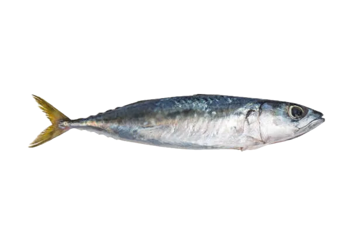

Silver Streak
Mackerel
Mackerel school in shimmering clouds, darting near the ocean’s surface with synchronized precision. Their journeys fuel marine predators and coastal communities across the globe.
Interesting Facts
- Streamlined bodies and forked tails let mackerel maintain bursts of speed while migrating thousands of miles.
- They’re rich in omega-3 oils, providing essential nutrients to marine food webs and human diets.
- Massive schools create mesmerizing bait balls that attract dolphins, whales, and seabirds.
